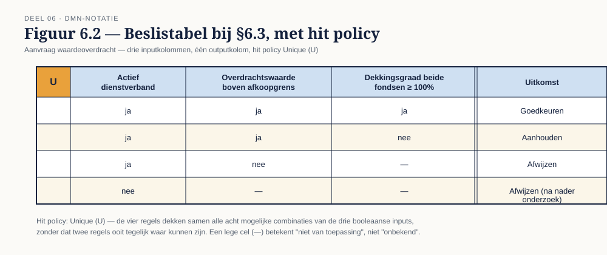
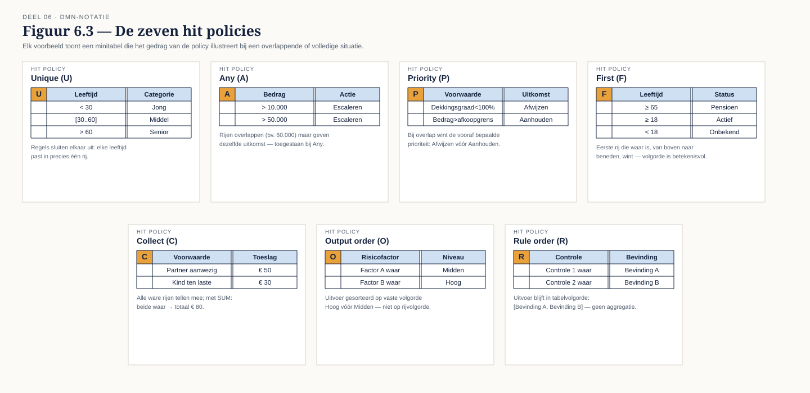

Deel 6 — DMN basis
Slidedeck · Ductus-cursus BPMN, CMMN & DMN · niveau 1 · deel 6 van 30 · 26 slides
Slide 1 — Titelslide
DMN basis — Deel 6
Beeldmerk, cursustitel
Spreeknotitie: We verlaten BPMN tijdelijk. Nieuwe taal, nieuwe manier van denken.
Slide 2 — Leerdoelen
Na vandaag kun je…
Zeven leerdoelen uit de reader
Spreeknotitie: Kort.
Slide 3 — Geen volgorde, geen token
DMN is geen BPMN
Doorgestreepte token-animatie naast een lege beslistabel
Spreeknotitie: Zet dit hard neer vóór de inhoud begint.
Slide 4 — De testvraag
Kun je het zonder "eerst… dan…" beschrijven?
Twee zinnen naast elkaar: één met tijd, één zonder
Spreeknotitie: Als het antwoord ja is: een beslissing.
Slide 5 — Terug naar WI-114
Drie controles, geen volgorde ertussen
Casusfragment uit §6.1
Spreeknotitie: Dit is dezelfde tekst als deel 1, opdracht 3 — nu concreet gemaakt.
Slide 6 — Opdracht 1
Proces of beslissing? Vijf fragmenten
Werkboekverwijzing, timer 20 minuten
Spreeknotitie: Individueel, plenair nabespreken. Fragment 3 krijgt extra aandacht.
Slide 7 — Decision Requirements Diagram
Vier elementtypen
 Figuur 6.1, leeg
Figuur 6.1, leeg
Spreeknotitie: Decision, input data, business knowledge model, knowledge source.
Slide 8 — Twee soorten pijlen
Information requirement · knowledge requirement
Figuur 6.1, pijlen toegevoegd
Spreeknotitie: Van data naar decision, of van BKM naar decision.
Slide 9 — De DRD voor WI-114
Eén decision, drie inputs
Figuur 6.1, volledig ingevuld inclusief knowledge source
Spreeknotitie: Dit bouwen deelnemers zo zelf na.
Slide 10 — Opdracht 2
Bouw de DRD in Conductus
Werkboekverwijzing, timer 20 minuten
Spreeknotitie: Individueel in Conductus.
Slide 11 — De beslistabel
Rijen zijn regels, kolommen zijn input en output

Figuur 6.2, leeg raster
Spreeknotitie: Introductie van de vorm.
Slide 12 — Ingevuld
Vier regels uit WI-114
Figuur 6.2, ingevuld met de vier expliciete combinaties
Spreeknotitie: Vraag: dekt dit alle mogelijke gevallen? (Nee — bewaar voor opdracht 3.)
Slide 13 — Horizontaal of verticaal
Een leesbaarheidskeuze, geen inhoudelijk verschil
Dezelfde tabel in beide oriëntaties
Spreeknotitie: Kort.
Slide 14 — Zeven hit policies
Wat als meer dan één regel waar is?

Figuur 6.3, alle zeven naast elkaar
Spreeknotitie: Dit is de examenkern van vandaag — neem er de tijd voor.
Slide 15 — Unique
Geen overlap toegestaan
Figuur 6.3-fragment: Unique
Spreeknotitie: De strengste en meest gebruikte policy in businesslogica.
Slide 16 — Any en Priority
Overlap toegestaan — mits consistent, of met een winnaar
Figuur 6.3-fragmenten: Any, Priority
Spreeknotitie: Any: controle-policy. Priority: expliciete rangorde.
Slide 17 — First en Collect
Eerste regel wint — of alles wordt verzameld
Figuur 6.3-fragmenten: First, Collect met de vier aggregaties
Spreeknotitie: Collect + SUM: toeslagen optellen als voorbeeld.
Slide 18 — Rule order en Output order
Volgorde van de tabel — of volgorde van de uitkomst
Figuur 6.3-fragmenten: Rule order, Output order
Spreeknotitie: Kort, deze twee komen minder vaak voor in de praktijk.
Slide 19 — Opdracht 3
Bouw de volledige beslistabel — alle acht combinaties
Werkboekverwijzing, timer 30 minuten
Spreeknotitie: Individueel in Conductus. Vier combinaties staan niet expliciet in de tekst — dat is opzet.
Slide 20 — Opdracht 4
Kies de hit policy — vijf situaties
Werkboekverwijzing, timer 25 minuten
Spreeknotitie: Tweetallen.
Slide 21 — Drie kwaliteitseigenschappen
Volledigheid · consistentie · overlap
 Figuur 6.4 — onvolledige tabel naast de gecorrigeerde versie
Figuur 6.4 — onvolledige tabel naast de gecorrigeerde versie
Spreeknotitie: Terugverwijzing naar deel 5, §5.4 — dit is semantische validatie, DMN-versie.
Slide 22 — FEEL, kort
Getallen, tekst, datums, ranges
Vijf voorbeeldexpressies uit §6.6
Spreeknotitie: Dit is de basis; deel 15 gaat dieper.
Slide 23 — De lege cel
Niet van toepassing, niet onbekend
Eén tabelcel leeg, met een pijl naar de tekst "elke waarde voldoet"
Spreeknotitie: Hardnekkige denkfout — benadruk expliciet.
Slide 24 — Het koppelpunt
De business rule task
 Figuur 6.5 — BPMN-fragment gekoppeld aan de DRD
Figuur 6.5 — BPMN-fragment gekoppeld aan de DRD
Spreeknotitie: Dit is waar deel 1's belofte concreet wordt: regel wijzigt, proces niet.
Slide 25 — Opdracht 5
FEEL lezen en schrijven
Werkboekverwijzing, timer 15 minuten (of huiswerk)
Spreeknotitie: Individueel.
Slide 26 — Opdracht 6, vooruitblik
Stellingen — en dan verder naar CMMN
Vier stellingen, korte aankondiging deel 7
Spreeknotitie: Het derde soort werk uit deel 1 krijgt nu zijn eigen taal.